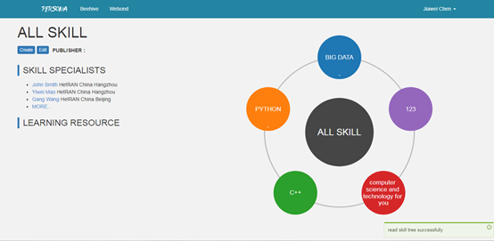

- INTRODUCE
- EXPERIENCE
- ACHIEVEMENT
- CONTACT
I'm YiWei Mao
I'm now a Graduated Student at Cloud Computing Lab,Software Department,Zhejiang University,researching on AIOps, Kubernetes
Experience
Projects
Score your Tai Chi by Kinect
This project can help Tai Chi students to score their Tai Chi movements automatically, using Kinect Skelton Technology. In this project, I raised a new movement scoring algorithm which can get the score as well as the process of your movement.
The movement scoring algorithm in this project has already applied in YiJun Ballet Teaching Studio in HangZhou.
Internship
Nokia, HangZhou / 2017.7
Took part in the development of Nokia employee skill manage system.
Using D3 to visualize IT skill map.

Eigen Technology, HangZhou / 2017.9~2018.3
Took part in the development of many AI-related systems.
Using React, Redux to build beautiful SPAs.
Harmony Cloud Technology, HangZhou / 2018.3~Now
Took part in the development of DevOps, Container Cloud System.
Learned a little knowledge of kubernetes from this experience.
Achievements
Innovation and Entrepreneurship Competition (Internet+) for College Student in Zhejiang Province (Silver Award)